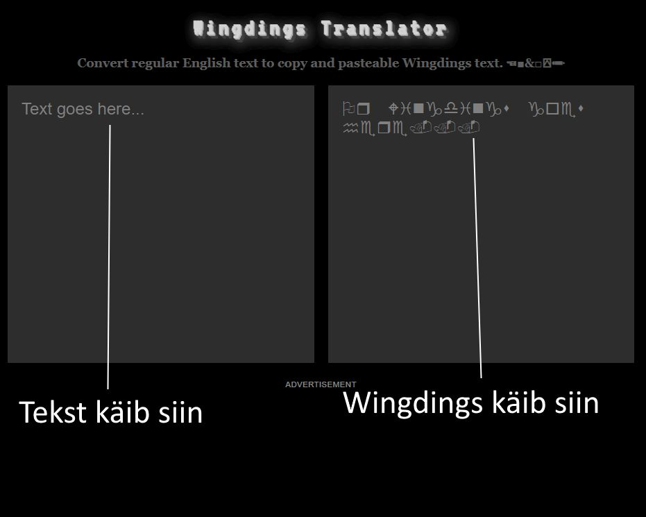
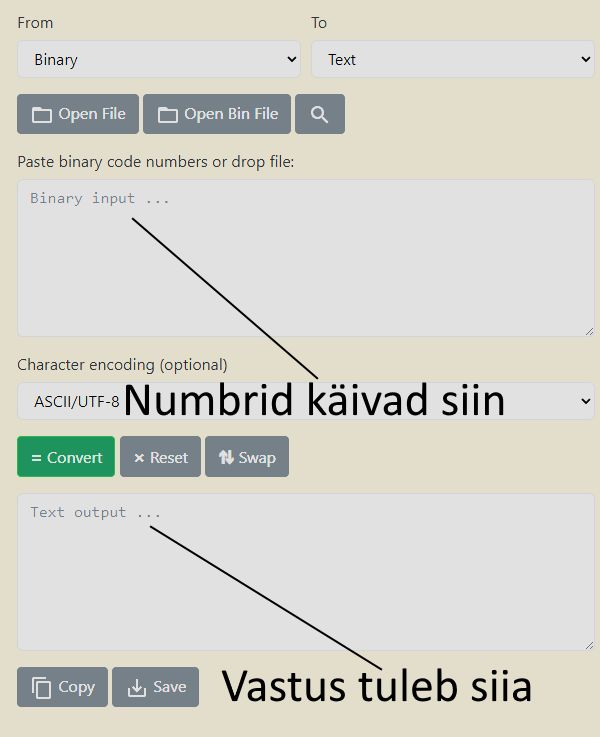
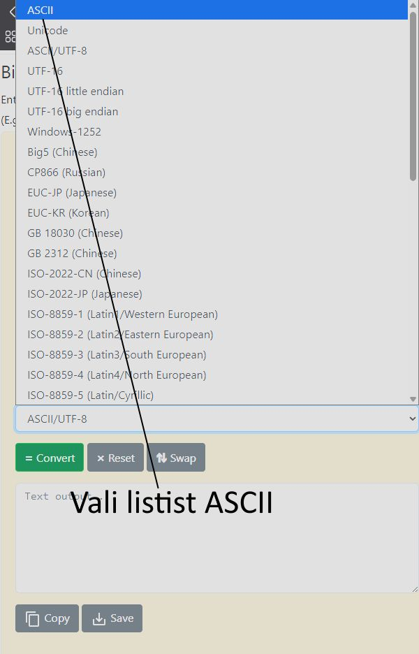

Tegemist teisel küsimusel on Base64-ga.
Vastuse saamiseks saad kasutada veebilehte https://www.base64decode.org/.

Tegemist esimesel küsimusel on fondiga mille nimi on "Wingdings".
Vastuse saamiseks saad kasutada veebilehte https://lingojam.com/WingdingsTranslator.
Tegemist teisel küsimusel on Base64-ga.
Vastuse saamiseks saad kasutada veebilehte https://www.base64decode.org/.
Tegemist kolmandal küsimusel on kahendsüsteemi ehk binaarsüsteemiga.
Vastuse saamiseks saad kasutada veebilehte https://www.rapidtables.com/convert/number/binary-to-ascii.html.
Neljandal küsimusel võib tulla probleem binaarsüsteemi vastuse saamisega.
Siin tuleb vajutada listile kus on kirjas "ASCII/UTF-8" ja valida listist "ASCII".
